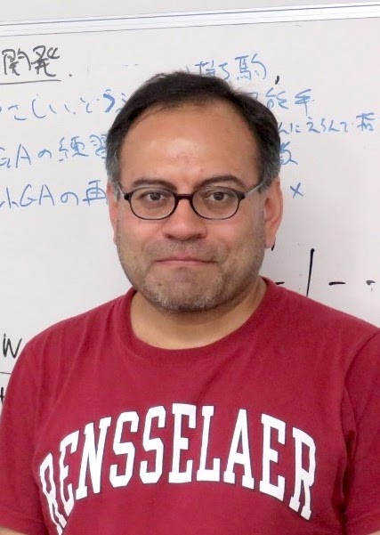

Biography (English)
I am a physicist who graduated from the National Autonomous University of Mexico (UNAM). I received financial support from the former National Council for Science and Technology (CONACyT) to pursue postgraduate studies abroad. CONACyT now became Mexico's Ministry for Science.
I hold a Master of Science in Applied Mathematics from the New Jersey Institute of Technology (NJIT) and a Doctorate (Ph.D.) in Mathematics from the Rensselaer Polytechnic Institute (RPI), both institutions in the United States.
In 2009, under the CONACyT Repatriation Program, I returned to Mexico as a visiting professor at the Center for Research in Mathematics (CIMAT) in Guanajuato.
From 2012 to 2015, I was a visiting professor in the Department of Mathematics at Universidad Autónoma Metropolitana (UAM Iztapalapa). Since 2015, I have been a full-time tenured professor-researcher in the same department. I was appointed a Level I National Researcher (SNI-CONACyT) that year.
My areas of interest are statistical and computational inverse problems in wave propagation, tomography, remote sensing, seismology, medical physics, statistical physics, and, more recently, mathematical modeling in biological physics and systems biology.
I collaborate with my statistics colleagues from the Data Science Group at UAM Iztapalapa on topics related to inverse problems, statistical learning (“machine learning”), and studying spatiotemporal models across various fields of knowledge. Particularly, I'm interested in spatial cellular and physiological processes.
Work Experience
-
Feb 2015 – Present
Full-Time Tenured Professor
Universidad Autónoma Metropolitana (UAM Iztapalapa), CDMX -
Sep 2012 – Feb 2015
Visiting Professor
Universidad Autónoma Metropolitana (UAM Iztapalapa), CDMX -
Dec 2008 – Aug 2012
Associate Professor
Centro de Investigación en Matemáticas (CIMAT), Guanajuato, Mexico
Education
-
Ph.D.
PhD in Mathematics
Rensselaer Polytechnic Institute (RPI), Troy, New York, USA -
M.Sc.
MSc in Applied Mathematics
New Jersey Institute of Technology (NJIT), Newark, New Jersey, USA -
B.Sc.
Físico (Physicist)
Facultad de Ciencias, Universidad Nacional Autónoma de México (UNAM), Mexico
Semblanza (Español)
Soy físico egresado de la Facultad de Ciencias de la Universidad Nacional Autónoma de México (UNAM). En el año 2000, recibí apoyo financiero del Consejo Nacional de Ciencia y Tecnología (CONACyT) de México para realizar estudios de posgrado en el extranjero y, parcialmente, también fui financiado por el Gobierno de los E.U.A. para los estudios de maestría y doctorado.
Soy Maestro en Ciencias en Matemáticas Aplicadas por el New Jersey Institute of Technology (NJIT) y Doctor (PhD) en Matemáticas por el Rensselaer Polytechnic Institute (RPI), ambas instituciones de los Estados Unidos.
Con el Programa de Repatriación de CONACyT en 2009, regresé a México como profesor visitante al Centro de Investigación en Matemáticas (CIMAT), en Guanajuato. Desde 2012 me incorporé como profesor visitante al Departamento de Matemáticas de la Universidad Autónoma Metropolitana, Unidad Iztapalapa CDMX, y, desde 2015, soy profesor-investigador (definitivo) titular de tiempo completo en el mismo Departamento. Ese año fui nombrado Investigador Nacional Nivel I (SNI-CONACyT). Actualmente, soy el Vicepresidente de la División de Física Médica de la Sociedad Mexicana de Física.
Mis campos de interés son los problemas inversos estadísticos y computacionales en propagación de ondas, tomografía, física médica y recientemente en la modelación matemática en física biológica y biología de sistemas.
Las afinidades con mis colegas en estadística, del Grupo de Ciencia de Datos de la UAM Iztapalapa, involucran, además de los problemas inversos, el aprendizaje estadístico (“Machine Learning”) y el estudio de modelos espacio-temporales en diversas áreas del conocimiento.
Biographie (Français)
Je suis un physicien diplômé de l'Université nationale autonome du Mexique (UNAM). J'ai reçu un soutien financier du Conseil national de la science et de la technologie (CONACyT) du Mexique pour poursuivre des études de doctorat (Ph.D.) à l'étranger.
Je suis titulaire d'une maîtrise ès sciences en mathématiques appliquées du New Jersey Institute of Technology (NJIT) et d'un doctorat (Ph.D.) en mathématiques du Rensselaer Polytechnic Institute (RPI), deux établissements d'enseignement supérieur aux États-Unis.
Avec le programme de rapatriement CONACyT en 2009, je suis retourné au Mexique en tant que professeur invité au Centre de recherche en mathématiques (CIMAT) à Guanajuato. Depuis 2012, j'ai été professeur invité au département de mathématiques de l'Universidad Autónoma Metropolitana (Unidad Iztapalapa). Depuis 2015, je suis professeur-chercheur titulaire à temps plein dans le même département. J'ai été nommé Chercheur National de Niveau I (SNI-CONACyT) cette année-là.
Mes domaines d'intérêt sont les problèmes inverses statistiques et informatiques dans la propagation des ondes, la tomographie, la physique médicale et, récemment, la modélisation mathématique en physique biologique et biologie des systèmes.